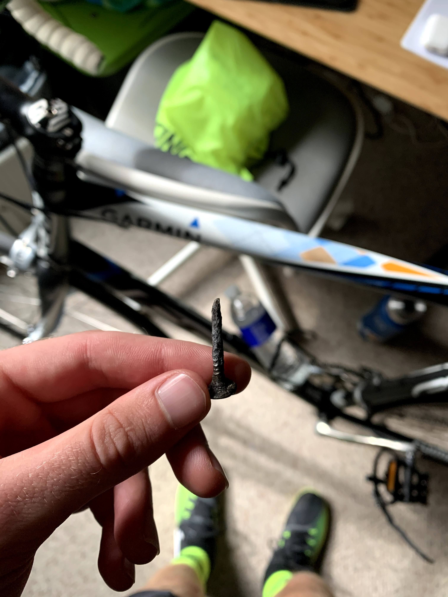
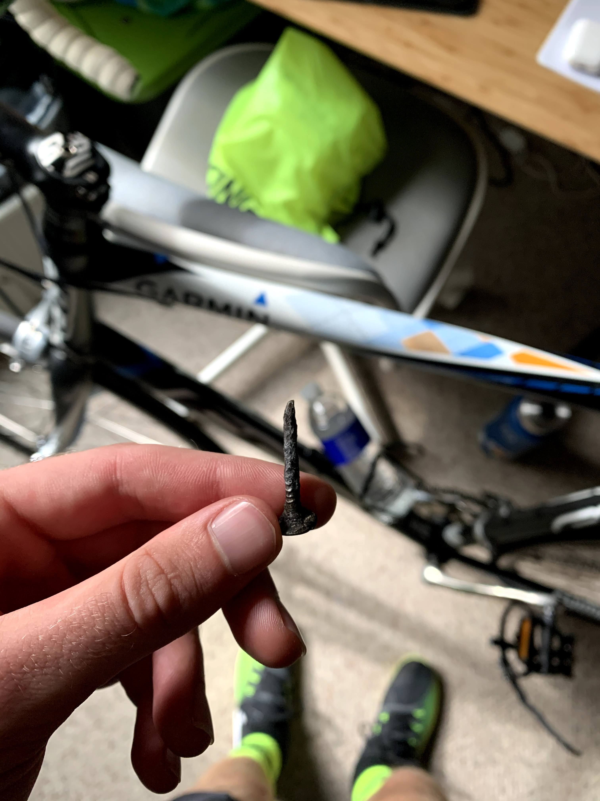
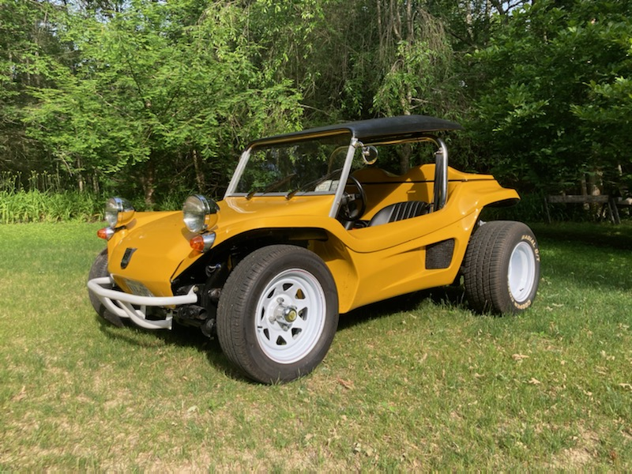
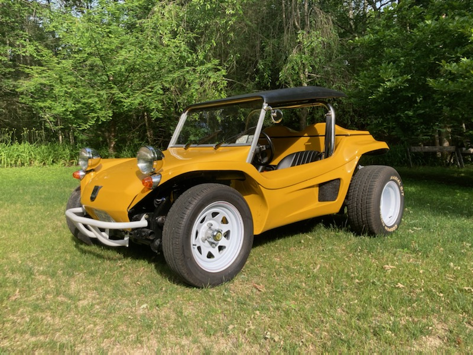

Running
I have been running consistently since I was in middle school. I am currently running 70-75 miles each week and currently compete for RPI in the NCAA. Follow me on Strava! (The pictures below in order: Our team after the sectional meet my senior year; Nike Cross Regionals New York; Indoor track meet in Pennsylvania)

 

 
